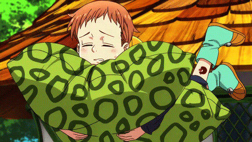

KING

King「キング」 is a member of the Seven Deadly Sins and is known as the Grizzly's Sin of Sloth. His real name is Fairy King Harlequin「妖精王ハーレクイン Yōsei-Ō Hārekuin」 for he protects the Fairy King's Forest and the rest of the Fairy Realm. His Sacred Treasure is the Spirit Spear Chastiefol, which he uses in conjunction with his inherent power, Disaster.
King's fairy form resembles a young boy with short brown hair, a high forehead, thin eyebrows, and brownish-orange eyes. He wears a long orange and aqua sweatshirt with a hood and navy blue sleeves, quarter-length navy blue pants, and short boots with large buttons matching his hoodie. He also carries a green leopard pattern pillow which is actually a transformation of his spear Chastiefol. Despite being a fairy, he has no visible wings. In his human form, he looks almost exactly like his wanted poster; large, fat and more ragged, perhaps hinting at how humans look to fairies. He wears an enlarged version of the clothes he wears as a fairy, though he can freely change the clothes he wears in this form. Ten years ago, he wore full-body light green armor with a helmet that fits the size of his human form. King's wanted poster depicts him as a big man with short hair, sideburns, a button nose, and a sneer. His Seven Deadly Sins Grizzly symbol is located just above his left ankle, on the outer side of his lower leg. After the Kingdom Infiltration arc, King added Helbram's Love Helm helmet attached on the hood of his jacket. After switching bodies with Drole and Gloxinia and going back in time, King wakes up with tiny wings sprouting on his back that resemble those of a fairy.